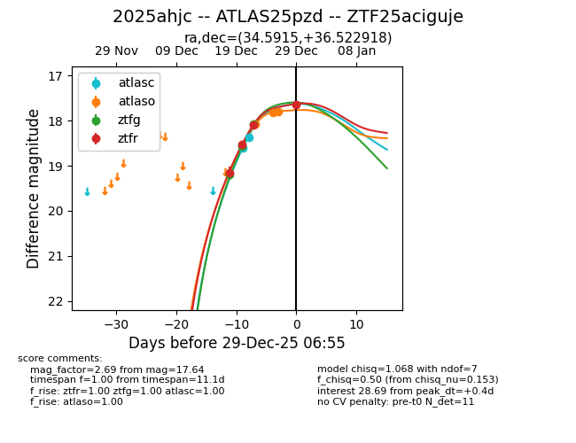
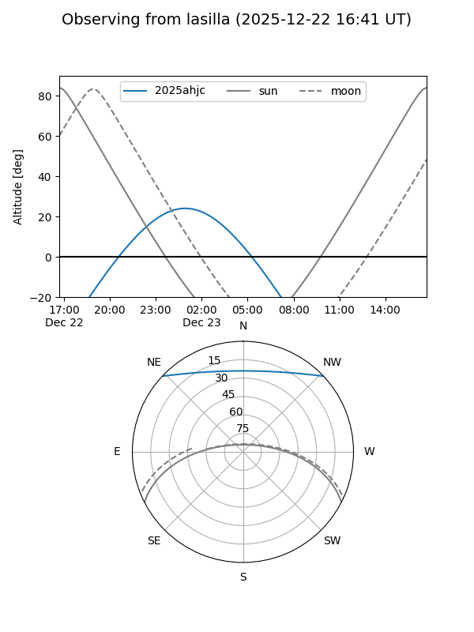
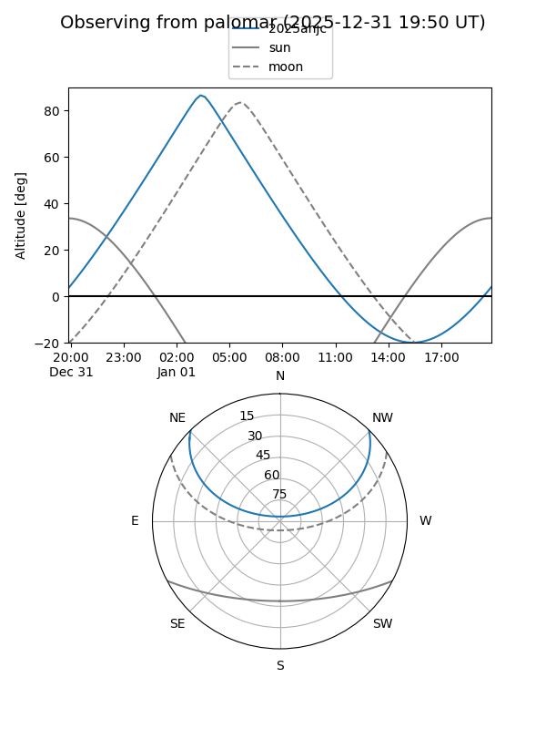
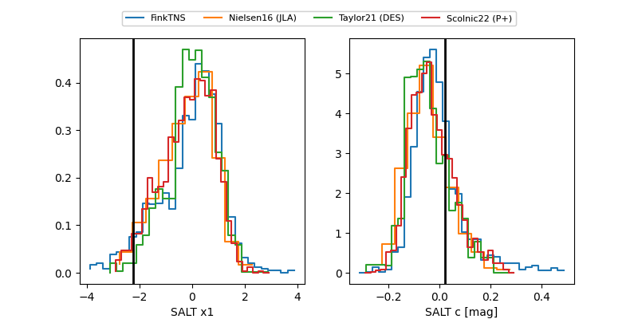

2025ahjc
Target 2025ahjc at 2025-12-31 18:00
Aliases and brokers:
FINK: link
Lasair: link
ALeRCE: link
TNS: link
YSE: link
alt names
ZTF25aciguje (ztf,fink_ztf)
2025ahjc (tns,yse)
ATLAS25pzd (atlas)
Coordinates:
equatorial (ra, dec) = 34.5915,+36.52292
equatorial (HMS+DMS) = 02:18:21.95,+36:31:22.51
galactic (l, b) = (141.8120,-23.14143)
Flags:
Photometry:
last atlasc=18.37, atlaso=17.70, ztfg=18.08, ztfr=17.64
2 atlasc, 5 atlaso, 3 ztfg, 4 ztfr detections
Lightcurve

Visibility


Additional plots
